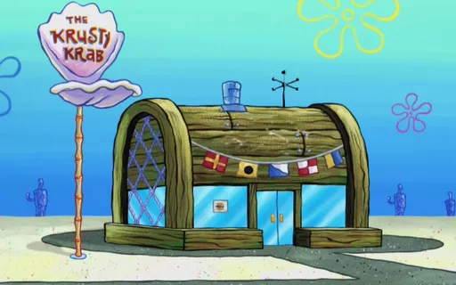
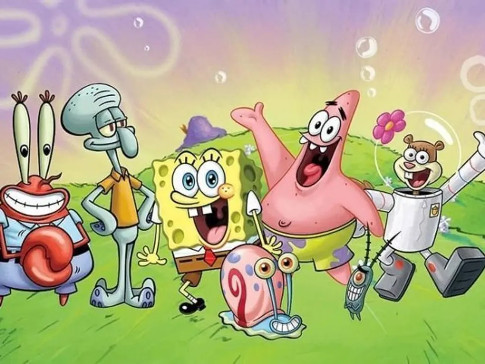

A história do desenho do Bob Esponja!
"Bob Esponja Calça Quadrada" é uma série animada criada por Stephen Hillenburg, que estreou em 1999. A história gira em torno de Bob Esponja, uma esponja do mar otimista e entusiasmado que vive em um abacaxi no fundo do oceano, na cidade de Fenda do Bikini.

O Bob Esponja trabalha como cozinheiro no restaurante fast-food "Siri Cascudo", onde prepara o famoso hambúrguer de siri. Ele é conhecido por sua personalidade alegre e sua risada contagiante.

Ao longo da série, Bob Esponja vive diversas aventuras com seus amigos, como Patrick, a estrela do mar, e Sandy, a esquilo cientista.
A série aborda temas de amizade, trabalho em equipe e a importância de ser fiel a si mesmo, coisas importantes da nossa vida, tudo isso com um toque de humor e criatividade. Com o passar dos anos, "Bob Esponja" se tornou um ícone da cultura pop, conquistando fãs de todas as idades e gerando filmes, jogos e produtos relacionados. É uma série que continua a encantar e divertir o público até hoje!